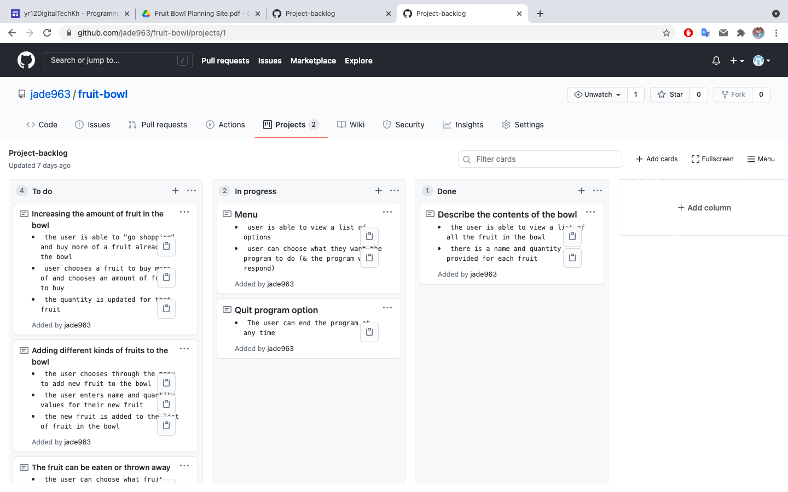
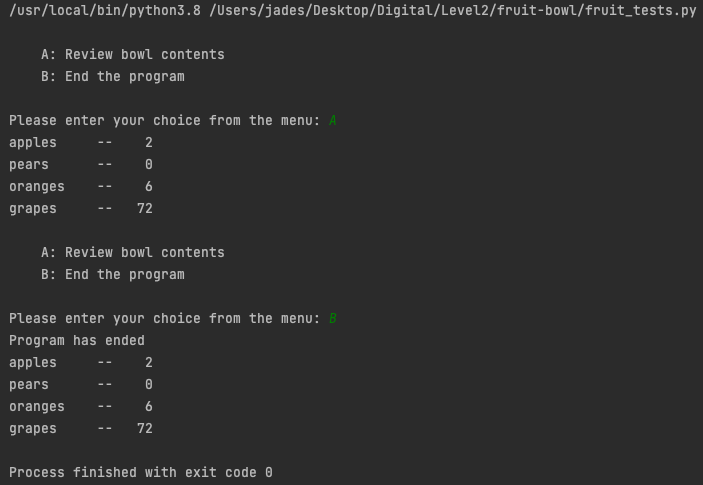

Brief
I am creating a "fruit bowl" program that will describe the contents of a fruit bowl to the user. Ideally, the user will be able to modify the contents of the fruit bowl through a menu of options.
Initial project backlog
Sprint ONE
Rough program plan
Sprint one board

Sprint one test
Screenshot to go here
Reflection
The fruit bowl program now contains a list of fruits, a function that will review that list, and a "main" function that will run the menu and allow the user to interact with the program. In the next sprint, the goal is to have a loop running, as well as a menu, so the user knows how to activate a function, as well as adding a "quit" option.
Sprint TWO
Rough program plan
Sprint two board
Sprint two test
Reflection
The program now has a menu that the user is able to interact with. The loop means that the program will continue running again and again unless the user deliberately stops it (which they now have the option to do) - this will be useful in later versions where more options will be added to the menu.
In the next version, I will focus on adding more functions to the program. The next sprint I do will focus on add/subtract functions, where the user can change the amount of fruit in a bowl.
Sprint THREE
Rough program plan

Sprint three board
Sprint three test
Reflection
I have successfully completed all the goals of this sprint. However, in my testing I have noticed that it is possible for a user to have a negative number of fruits in the bowl - this should not be allowed and will be addressed after all of the major functions have been added.